Edit Control
An edit control is a window in which the user can enter and edit text. When the user clicks the mouse in an edit control it displays an I-beam cursor signaling that the control is focused. While an edit control has the keyboard focus, the user can use the keyboard to enter text or edit the existing content. Editing keys include the BACKSPACE, DELETE and arrow keys. The user can also use the mouse to select characters to be deleted or to select the place to insert new characters.
Edit controls can be classified into three main groups:
- text-type edit controls such as single-line, multi-line and password edit controls,
- double-type edit controls with general double, angle, polar angle, length or scale independent length values,
- integer-type edit controls with (unsigned) 32-bit integer values.
Integer-type and double-type edit controls are also known as numeric-type edit controls. There is an additional edit control in DG, the so called rich edit control. The rich edit control is similar to the multi-line edit control but it has some other features. This is why there is a set of handling functions for rich edit controls in DG. For details see rich edit controls and rich edit control specific functions.
Numeric-type edit controls have a range and a current value. The range is the set of continuous values that the control can represent. These values are expressed as 32-bit integers and double precision floating point numbers for integer- and double-type edit controls, respectively. Numeric-type edit controls can process not only absolute but relative numerical input as well. The user can enter a relative input by pressing '+' or '-' sign at the end of numbers. In this case the old numeric value of the edit control is increased or decreased by the currently typed value.
By default edit controls have thick three-dimensional sunken frame, however, they can be drawn without frame as well. Frameless edit controls are very useful for example when they are placed onto list boxes as ontab dialog items.
Item type
- DG_ITM_EDITTEXT
Subtypes
-
Value Meaning DG_ET_TEXT Single-line text edit control.
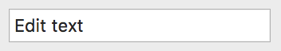 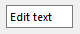
DG_ET_MULTILINETEXT Multi-line text edit control, with or without scroll bar(s).
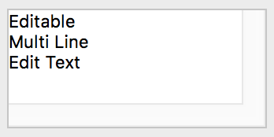 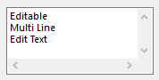
DG_ET_PASSWORD Password edit control. Dots (Macintosh) or asterisks (Windows) appear instead of typed characters.
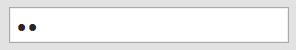 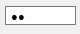
DG_ET_REAL Edit control with double value. DG_ET_ANGLE Edit control with angle value (display unit type: decimal degree). DG_ET_POLARANGLE Edit control with polar angle value (display unit types: decimal degree; degree, minute, second; grad; radian; surveyor unit). DG_ET_LENGTH Edit control with length value. DG_ET_AREA Edit control with area value. DG_ET_VOLUME Edit control with volume value. DG_ET_MM_OR_PT Edit control with scale independent length value given in mm, shown in mm or point. DG_ET_INT Edit control with 32-bit integer value. DG_ET_POSINT Edit control with positive 32-bit integer value.
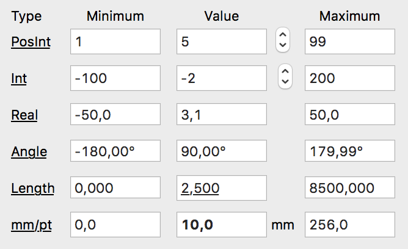
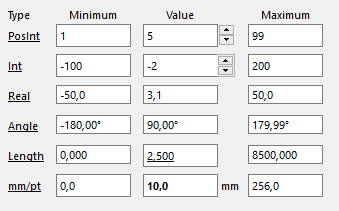
Frame flags
-
Value Meaning DG_ET_FRAME Edit control with three-dimensional sunken frame.
DG_ET_NOFRAME Edit control without frame.
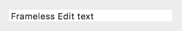 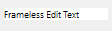
Absolute/relative input flags
- This flag is applicable for numeric-type edit controls only.
-
Value Meaning DG_ET_ABSOLUTE Edit control can process absolute numerical input only. DG_ET_RELATIVE Edit control can process both absolute and relative numerical input.
Font change flags
-
Value Meaning DG_ET_CHANGEFONT The font size of a length-type edit control is changed when the unit of length is changed from metric to imperial or vice versa. This flag has no effect on other type of edit controls. DG_ET_NOCHANGEFONT The font size of a length-type edit control is not changed when the unit of length is changed from metric to imperial or vice versa. This flag has no effect on other type of edit controls.
Update flags
-
Value Meaning DG_ET_UPDATE Content of the edit control is validated automatically in a short time (update delay time) after the last keypress. DG_ET_NOUPDATE Content of the edit control is validated only if it loses the keyboard focus. DG_ET_NODELAY Content of the edit control is updated immediately.
Scroll flags
- This flag is applicable for multi-line edit controls only.
-
Value Meaning DG_ET_HSCROLL Edit control with horizontal scrollbar. DG_ET_VSCROLL Edit control with vertical scrollbar. DG_ET_NOSCROLL Edit control without any scrollbars. - DG_ET_HSCROLL and DG_ET_VSCROLL flags can be combined to get both horizontal and vertical scrollbars.
Read-only flags
-
Value Meaning DG_ET_EDITABLE Edit control can be edited.
DG_ET_READONLY Edit control is read-only.
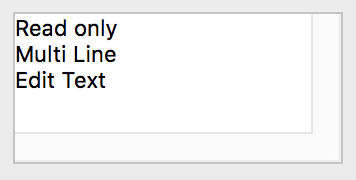 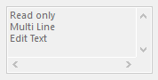
GRC Specification
TextEdit x y dx dy fontSpec [editFlag] maxCount
MultiLineEdit x y dx dy fontSpec [editFlag] scrollMode
PasswordEdit x y dx dy fontSpec [editFlag] maxCount
RealEdit x y dx dy fontSpec [editFlag] "minVal" "maxVal"
AngleEdit x y dx dy fontSpec [editFlag] "minVal" "maxVal"
PolarAngleEdit x y dx dy fontSpec [editFlag] "minVal" "maxVal"
LengthEdit x y dx dy fontSpec [editFlag] "minVal" "maxVal"
AreaEdit x y dx dy fontSpec [editFlag] "minVal" "maxVal"
VolumeEdit x y dx dy fontSpec [editFlag] "minVal" "maxVal"
MMPointEdit x y dx dy fontSpec [editFlag] "minVal" "maxVal"
IntEdit x y dx dy fontSpec [editFlag] "minVal" "maxVal"
PosIntEdit x y dx dy fontSpec [editFlag] "minVal" "maxVal"
SAMQuantityEdit x y dx dy fontSpec subType [editFlag] "minVal" "maxVal"
where x and y are the pixel coordinates of the upper left corner of the edit control, dx and dy are the width and height of the control in pixels. fontSpec declares the size and style of the control's font. The optional editFlag parameter can be any OR(|) combination of the frame, absolute/relative input, font change, update and read-only flags. If you need the default value of each flags, editFlag can be omitted. maxCount specifies the maximum number of characters that can be typed into single-line text and password edit controls. scrollMode defines whether the multi-line edit control should have horizontal and/or vertical scrollbars. "minVal" and "maxVal" strings initialize the range of numeric-type edit controls. Double values must be written in their usual string representation here.
Possible values of fontSpec:
-
Value DG constant combination used in DGSetItemFont ExtraSmall DG_IS_EXTRASMALL SmallPlain DG_IS_SMALL | DG_IS_PLAIN SmallBold DG_IS_SMALL | DG_IS_BOLD SmallItalic DG_IS_SMALL | DG_IS_ITALIC SmallUnderline DG_IS_SMALL | DG_IS_UNDERLINE LargePlain DG_IS_LARGE | DG_IS_PLAIN LargeBold DG_IS_LARGE | DG_IS_BOLD LargeItalic DG_IS_LARGE | DG_IS_ITALIC LargeUnderline DG_IS_LARGE | DG_IS_UNDERLINE
Possible values of the frame flag:
-
Value Meaning frame The DG_ET_FRAME flag is set. This is the default value. noFrame The DG_ET_NOFRAME flag is set.
Possible values of the absolute/relative input flag:
-
Value Meaning absolute The DG_ET_ABSOLUTE flag is set. This is the default value. relative The DG_ET_RELATIVE flag is set.
Possible values of the font change flag:
-
Value Meaning changeFont The DG_ET_CHANGEFONT flag is set. This is the default value. noChangeFont The DG_ET_NOCHANGEFONT flag is set.
Possible values of the update flag:
-
Value Meaning update The DG_ET_UPDATE flag is set. This is the default value. noUpdate The DG_ET_NOUPDATE flag is set. noDelay The DG_ET_NODELAY flag is set.
Possible values of the read-only flag:
-
Value Meaning editable The DG_ET_EDITABLE flag is set. This is the default value. readOnly The DG_ET_READONLY flag is set.
Possible values of scrollMode:
-
Value Meaning HScroll Edit control with horizontal scrollbar. VScroll Edit control with vertical scrollbar. HVScroll Edit control with both horizontal and vertical scrollbars. NoScroll Edit control without any scrollbars.
Suggested sizes
The following item height values can be suggested for single-line edit controls:
-
Font size Frame type Item height in pixels DG_IS_EXTRASMALL DG_ET_FRAME 16 DG_IS_EXTRASMALL DG_ET_NOFRAME 12 DG_IS_SMALL DG_ET_FRAME 21 DG_IS_SMALL DG_ET_NOFRAME 17 DG_IS_LARGE DG_ET_FRAME 24 DG_IS_LARGE DG_ET_NOFRAME 20
When a single-line edit control is created either from GRC or from program code by DGAppendDialogItem, DG automatically adjusts its height to the above values so that the center of the control does not move. The same happens if the size of the edit control's font is altered by DGSetItemFont.
Messages
-
Message Meaning DG_MSG_CHANGE The text of a text-type edit control or the value of a numeric-type edit control is changed. The message data parameter is always zero for text-type edit controls. For integer- or double-type edit controls this parameter contains the control's previous value or a pointer to a double precision variable holding the previous double value. DG_MSG_FILTERCHAR A key is pressed while the edit control has the keyboard focus. The message data parameter contains the character code of the key pressed. If the application returns 1 in the dialog callback function the character is filtered out. DG_MSG_FOCUS The edit control gains or loses the keyboard focus. The message data is 1 or zero, respectively. DG_MSG_DRAGDROP Drag and drop related event occured. This message is enabled by default for edit controls. Edit controls can be both drag source and target.
Modification Flag
The modification flag of edit controls is set by user actions that generate DG_MSG_CHANGE messages. Functions modifying texts or numeric values of edit controls can also set the modification flag except if they are called when handling the DG_MSG_INIT message in the dialog callback function. The following table summarizes these functions for different type of edit controls:
-
Subtype Functions DG_ET_TEXT DGSetItemText, DGCatItemText DG_ET_MULTILINETEXT DGSetItemText, DGCatItemText DG_ET_PASSWORD DGSetItemText, DGCatItemText DG_ET_REAL DGSetItemValDouble, DGSetItemMinDouble, DGSetItemMaxDouble DG_ET_ANGLE DGSetItemValDouble, DGSetItemMinDouble, DGSetItemMaxDouble DG_ET_POLARANGLE DGSetItemValDouble, DGSetItemMinDouble, DGSetItemMaxDouble DG_ET_LENGTH DGSetItemValDouble, DGSetItemMinDouble, DGSetItemMaxDouble DG_ET_AREA DGSetItemValDouble, DGSetItemMinDouble, DGSetItemMaxDouble DG_ET_VOLUME DGSetItemValDouble, DGSetItemMinDouble, DGSetItemMaxDouble DG_ET_MM_OR_PT DGSetItemValDouble, DGSetItemMinDouble, DGSetItemMaxDouble DG_ET_INT DGSetItemValLong, DGSetItemMinLong, DGSetItemMaxLong DG_ET_POSINT DGSetItemValLong, DGSetItemMinLong, DGSetItemMaxLong
Use DGModified or DGResetModified to retrieve or reset (clear) the state of the modification flag.
Remarks
The text of a text-type edit control can be set, modified and retrieved by DGSetItemText, DGCatItemText, and DGGetItemText, respectively. If you set the text of a multi-line edit control and the end-of-line markers are not the platform specific ones (CR on Macintosh, CRLF on Windows), DG automatically converts end-of-line markers in the text before sets it to the control. To retrieve the text of a multi-line edit control, use DGGetMultiLineText. This function converts end-of-line markers in the text to a given type.
The range of a numeric-type edit control can be specified not only in GRC. You can dynamically alter the range by using the DGSetItemMinLong and DGSetItemMaxLong functions for integer-type edit controls or DGSetItemMinDouble and DGSetItemMaxDouble functions for double-type edit controls. Use DGGetItemMinLong and DGGetItemMaxLong or DGGetItemMinDouble and DGGetItemMaxDouble to retrieve the range of a numeric-type edit control. The current integer or double value can be set and retrieved by DGSetItemValLong or DGSetItemValDouble and DGGetItemValLong or DGGetItemValDouble, respectively.
Angles are always treated as degree values for angle-type edit controls (DG_ET_ANGLE, DG_ET_POLARANGLE).
If either of the range or value setting functions is called, DG checks the consistency of data (i.e. whether the minimum <= value <= maximum condition is true or not). If data are inconsistent, DG automatically adjusts them. For the details of this adjustment see the description of DGSetItemValLong, DGSetItemMinLong, DGSetItemMaxLong, DGSetItemValDouble, DGSetItemMinDouble and DGSetItemMaxDouble.
An integer-type edit control can be associated with an edit spin control when they are created from GRC or program code. The edit spin control must be just after its companion edit control in the dialog item list and it must be positioned next to the right of the edit control. On Windows DG closes up these controls so that they look like a single control. Clicking the up or down arrows of the spin control increments or decrements the values of both controls. On Windows when the companion edit control has the keyboard focus, the value of the controls can be modified not only by mouse clicks but by pressing the up or down arrow keys as well. The range and the value of an edit spin control and its companion edit control are synchronized automatically by DG every time when you call one of the DGSetItemValLong, DGSetItemMinLong or DGSetItemMaxLong functions on either of the controls. An edit spin control can represent short integer values only so the range of the integer-type edit control must also be restricted to short values. Note that an edit spin control does not receive DG_MSG_CHANGE messages, they are sent to the companion edit control instead.
The format in which double-type edit controls display their content is determined by the current unit settings of DG. These settings contains information about how many decimal digits are shown in different type of edit controls and which unit of angle or unit of length is used for displaying angle or length values. The unit settings are collected in the DGUnitData structure and can be set or retrieved by DGSetUnit or DGGetUnit, respectively. When an application alters the unit settings by using DGSetUnit, all of its edit controls are automatically updated to reflect the new settings. If the current value of an integer-type edit control is exactly LONG_MIN or LONG_MAX, five asterisks ("*****") are displayed instead of the number. Similarly, five asterisks are displayed in a double-type edit control if its value less than -DG_DBL_MAX or greater than DG_DBL_MAX.
The font of an edit control can be specified not only in GRC but by the DGSetItemFont function as well. Use DGGetItemFont to retrieve the font currently assigned to an edit control. When the unit of length is changed from metric to imperial using the DGSetUnit function, DG automatically sets the font size of length-type edit controls to DG_IS_SMALL. In the opposite case the font size is changed to DG_IS_LARGE. Use the DG_ET_NOCHANGEFONT flag, if you want to prevent a length-type edit control from changing the size of its font.
Of course, the standard clipboard operations (cut, copy, paste) work on all types of edit controls in DG. After the user selects any part of the content of an edit control, the selected data can be copied or cut to the clipboard or replaced from the clipboard. Clipboard operations are initiated by the user when she/he presses one of the usual keyboard shortcuts or chooses the appropriate command from the application's edit menu. On Windows the user can click the right mouse button on the edit control and choose the command from the appearing context menu as well. The application should execute the chosen clipboard command by calling the DGEditTextCut, DGEditTextCopy or DGEditTextPaste function. The selection can also be cleared without copying it to the clipboard by DGEditTextClear. Use DGEditTextUndo to undo the last operation (clear, copy, cut, paste or typing) in the focused edit control.
When the user enters text into an edit control, the typed characters are automatically filtered by DG according to the type of the control. For example an 'a' character can not be entered into an integer-type edit control (DG beeps instead). If a character passes through this automatic filtering DG sends a DG_MSG_FILTERCHAR message to the dialog callback function giving the application a chance to filter out the character. If the application wants to do so for some reason, it should respond 1 to this message.
If the update flag of an edit control equals to DG_ET_NODELAY, DG immediately validate the control's content and sends a DG_MSG_CHANGE message to the dialog callback function when the content of the control is changed by the user. If the update flag has the value of DG_ET_UPDATE, the DG_MSG_CHANGE message is sent only after the so called edit update delay time expires. When DG is initialized, this delay time is set to 1 second but later it can be modified by DGSetEditUpdateDelay (use DGGetEditUpdateDelay to retrieve its current value). If the update delay time is set to large enough, edit controls are practically validated only if they lose the keyboard focus. You can reach the same behavior by setting the update flag of an edit control to the value of DG_ET_UPDATE. Note that the update flag can be specified in the GRC only.
If an edit control has the DG_ET_READONLY flag, its content can not be edited by the user. A read-only edit control looks like a static text with client frame. In certain circumstances it is advisable to apply read-only edit controls instead of static texts because the usual copy command works on them and their content can be scrolled even in both direction (of course only if multi-line edit control is used).
The edit control is one of the focusable controls of DG. When an edit control gains or loses the keyboard focus as a result of user actions, the dialog callback function receives a DG_MSG_FOCUS message. The keyboard focus can be set to an edit control from program code, too, by DGSetFocus. To retrieve the control that currently has the keyboard focus use DGGetFocus.
The keyboard focus and the focusable control categories in DG essentially have the same meaning as in the Macintosh operating system (i.e. the same type of controls are focusable in DG and on Macintosh). On Windows, however, more controls can have keyboard focus. Focusable controls of DG form a subset of focusable controls of Windows. The DGSetFocus and DGGetFocus functions work on focusable controls of DG only.
The size of the content in a multi-line edit control is limited to 32K. If you need to handle larger amount of text use a rich edit control instead.
Requirements
- Version: DG 2.2.0 or later
- Header: DG.h
See Also
Dialog item types, List Box, Rich Edit Control, Spin Control
Clipboard specific functions, DGAppendDialogItem, DGCatItemText, DGGetEditUpdateDelay, DGGetFocus, DGGetItemFont, DGGetItemMaxDouble, DGGetItemMaxLong DGGetItemMinDouble, DGGetItemMinLong, DGGetItemText, DGGetItemValDouble, DGGetItemValLong, DGGetMultiLineText, DGGetUnit, DGModified, DGResetModified, DGSetEditUpdateDelay, DGSetFocus, DGSetItemFont, DGSetItemMaxDouble, DGSetItemMaxLong, DGSetItemMinDouble, DGSetItemMinLong, DGSetItemText, DGSetItemValDouble, DGSetItemValLong, DGSetUnit, Rich edit control specific functions, Callback functions
DG_MSG_CHANGE, DG_MSG_FILTERCHAR, DG_MSG_FOCUS, DG_MSG_INIT
DGUnitData